The Search page can be launched from any other Orion pages with a search scope. Refer to Searching for file content section on how to launch the search page from different places. The left hand side of the page displays the search and replace field and all other options. The right hand side displays the result when you invoke the search. The header of the result pane displays the total number of matches and the number range of the first page. Each file is expandable to display all the lines that match the keyword. You can use right arrow key to pop up a 5-line context around the line. To view the file with the line located you can click on any match to open the editor. The page is designed to display multiple pages if the number of result files exceeds 40. To view more results you can use the previous and next page actions in the tool bar.
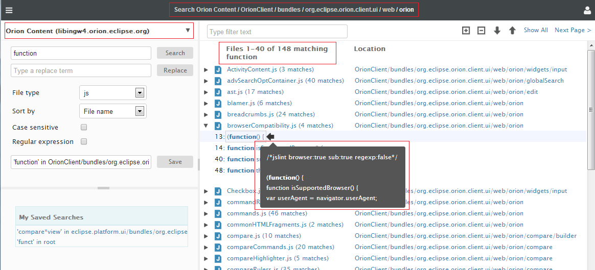
When you type on the search field, there is a suggested list popping up under the field. The suggested list contains the most recent searched keywords, filtered by the current typed. The max number of the recent keyword is 20.
You can also delete the recent keyword when it is highlighted. Note that if you use backspace key till the search field is empty, it will show you all the recent search terms.
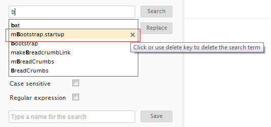
In the result pane, there is a way to narrow down the number of the files and the lines of matches. Type a keyword in the filter box and it will display only the files and matching lines that contain that filter keyword. Note that the search term is highlighted by bold and the filter term is highlighted by the yellow background. If you backspace the filter to empty, it will show you all the results as normal.
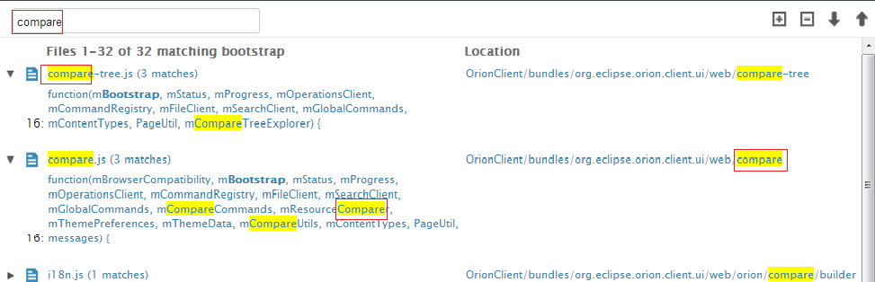
When you launch the search page, the bread crumb shows the current scope. But once the result pane shows some results, you can scope up and down for the same keyword from there.
If there are other file systems installed, you can switch to them in the search page. The search will then start from the selected file system.
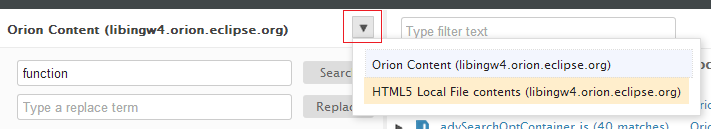
Let's assume that you've just searched for "function" on a folder and you got 265 files but you want to see the results on a folder you are interested in. You can now click on the location column where the interesting folder is presented. The result will be scoped down to that folder by the same keyword.
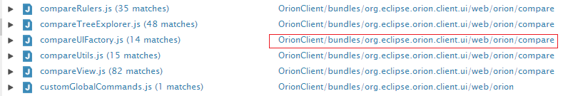
If your search result presents a sub folder but you want a broader scope, you can click on any segment in the breadcrumb. The result will be scoped up to that folder by the same keyword.
On the left hand side of the page you can name a search and save it.
Let's say you are searching "foo" on folder "bar". The default name of the saved search is "foo in bar" when you invoke the search. You can click on the save button to decide if you want to save it. The saved searches are displayed in the bottom part of the left hand side pane, called My Saved Searches.
Note that this is a bookmark to the search, rather than a specific search result. Clicking on a link in the My Saved Searches will perform a new search with the same search terms.
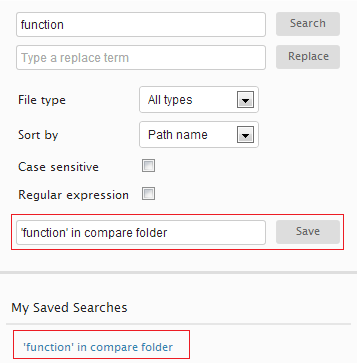
You can also filter and perform the saved searches from the search completion under the search field when you type.
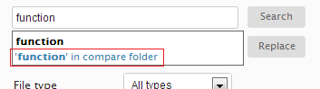
You can select a search to delete or rename it. Note that multiple selection is allowed but only delete action is available for multiple selection.
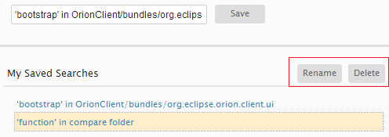
There are four actions in the tool bar for navigating matches. Expand all and Collapse all are convenient actions to view all matches or just view the file list. Up and Down allow you to just iterate all the files and matches top-down or bottom-up. While you are iterating, the current row is moving to indicate where you are. You can also jump over to a specific file or match by clicking on that row, which gives a quick switch-over to where you want to start the iteration. The current row is always cached as the browser's cookie based on the search URL. If you leave the page and come back or refresh the page, the current row is restored.
When the pane is loaded, it is focused and the current row is highlighted where you can use the keyboard navigation. Note that keyboard navigation is available only when the result pane gets focus. If focus is not on the result pane, just click on any place in the result pane to get it back.
Keyboard navigation when doing replace is similar. But as the file and match names are not links to open the editor, enter key is not available. Also note that there is no context tip because you can view them in the compare view.
There are two ways to view details on a match. When the current row is on a match, pressing right arrow key will pop up a context tip with five lines of code around the hit line. Note that if you use up and down arrow keys from now, the context tip changes contents when a match is iterated. Use left arrow key to cancel the context tip. If you want to view more details, press enter key or click on the link of the match. This will open the Orion editor with the line located at the matching place.
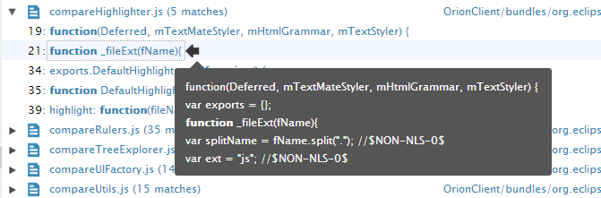
When you choose to open the editor for more details, the editor will be opened with the find&replace feature for you. If you click on a file, the editor will open with the first match highlighted. If you click on a match, that match will be highlighted in the editor. You can then continue to work on this single file without bothering to bring the find&replace up again.
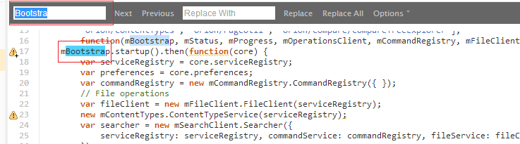
If the number of matching files exceeds the page size, which is 40 by default, the Next page and Previous page actions will appear in the tool bar.
Orion search is based on the file indexer on the server side. There may be some rare cases that your updated files are not synced up into indexer yet when you invoke the search. For example, if you search on foo and replace all the matches with bar in a file and then search on foo again right away. Depending on how many files on the server, the indexer may still hit the file but the file does not contain foo any more. In this case the file is greyed out in the result list but if you search again later it will disappear from the list completely.
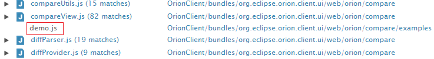
Type both a search term and replace term, click replace button. Now you will see a replace preview on the result pane. When the replace preview is loaded on the result pane, the compare view is displayed by default at the bottom of the result pane. While you are iterating matches, the compare view highlights the difference for the current row. Note that you can click on Hide Compare on the toolbar to hide it for a smoother iteration and bring it back later by Show Compare.
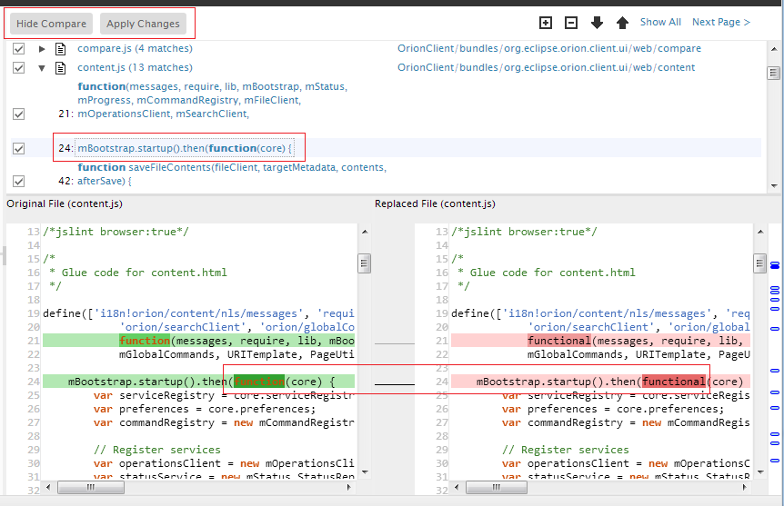
Refer to Search and replace across files for details.
There are several limitations that will be addressed in the future releases.
This document is maintained in a collaborative wiki. If you wish to update or modify this document please visit http://wiki.eclipse.org/Orion/Documentation/User_Guide/Reference/Search_Results_page